Cattle Management
Individual records for every cow, including health, breeding and production details.
FEATURED PROJECT · COMPLETED
A farm management app that keeps every farm record in one place, does the maths for me and shows whether the farm is making a profit or a loss.
OVERVIEW
My Farm Manager is a finished farm management app. I built it for a working dairy farm and I use it to manage the farm’s 13 cows.
It keeps livestock, milk, feed, expense and breeding records together, then turns them into statistics: how each cow is producing, how this month compares with the last, and what the farm is earning or losing. Those numbers help me make decisions instead of guessing.
THE PROBLEM
A dairy farm produces a steady stream of numbers: how much each cow gives, what feed costs, what the vet charged, when a cow is due to calve. Kept by hand, they are hard to add up and even harder to learn from.
I wanted one app that records everything as it happens, does the arithmetic automatically and answers the questions that matter: which cows produce the most, is production going up or down, and is the farm making money. It is built around how the farm actually works, with milk recorded by session, cow by cow.
THE APPLICATION
Livestock records, milk production, expenses and finances work together in one system, so the numbers always add up.

01 — DASHBOARD
Pick a month and see the cattle count, milk produced, milk income, expenses and estimated profit straight away, with quick actions for the jobs I do most.
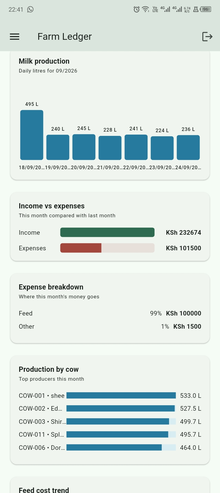
02 — ANALYTICS
Daily milk charts, income against expenses, an expense breakdown and the top-producing cows show where the farm is strong and where money is going.
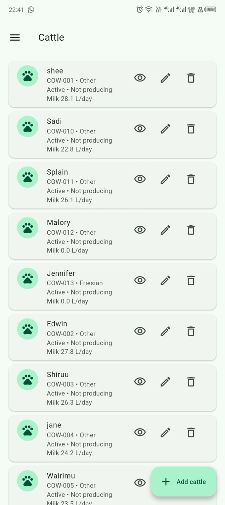
03 — CATTLE
Every cow has her own record with breed, tag, dates, health, breeding and production details, and the list can be viewed, edited or searched in a tap.
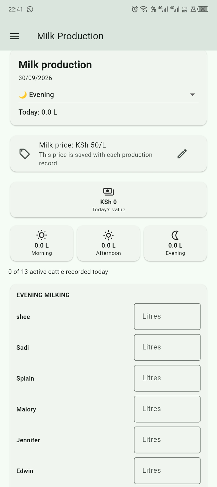
04 — MILK PRODUCTION
Milk is recorded per cow for the morning, afternoon or evening milking, or as a total for the whole herd. The milk price is saved with each record, so income is always calculated correctly.
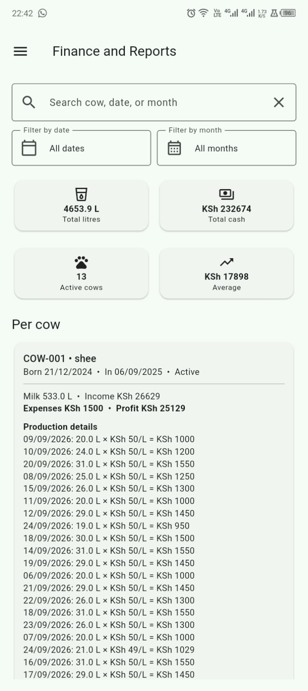
05 — FINANCE & REPORTS
Total litres, total income and averages sit beside a per-cow breakdown of income, expenses and profit, with every day’s litres multiplied by the price so I can check the maths.
MORE OF THE APP
A few more screens from everyday use. Tap any image to enlarge it.
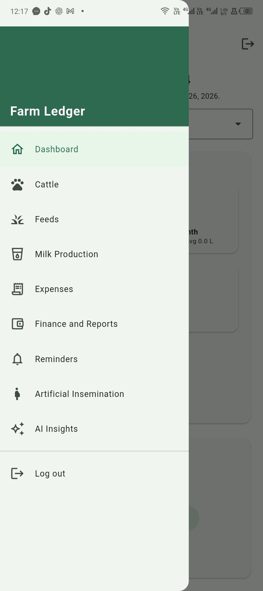
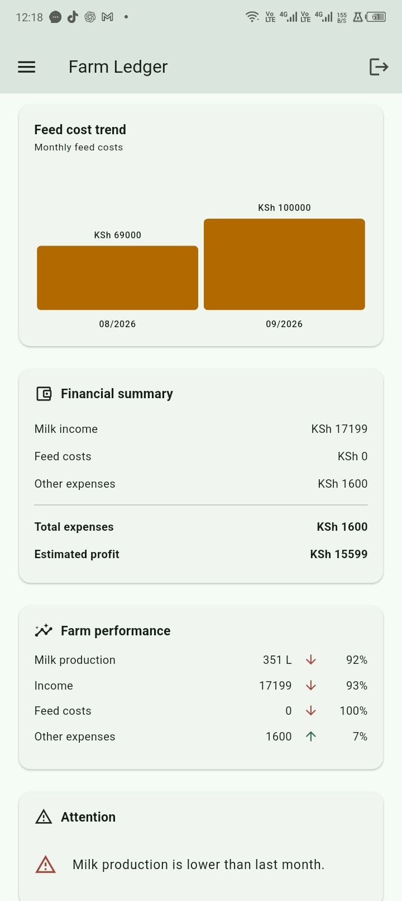
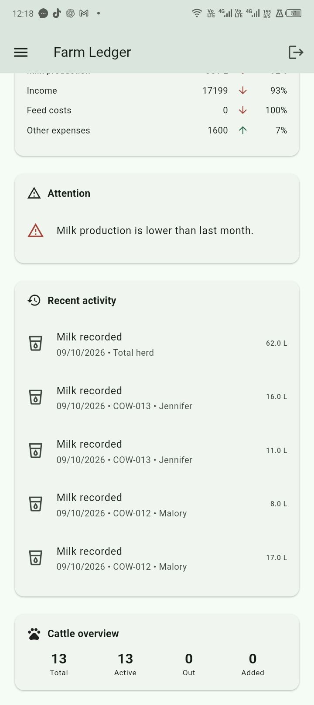
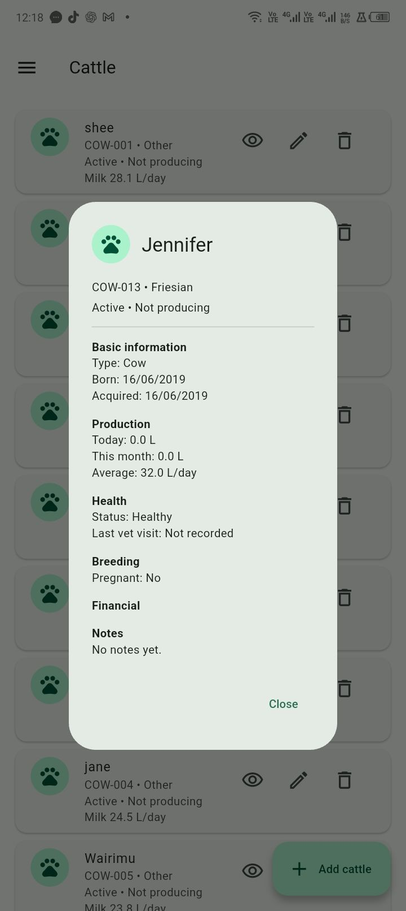
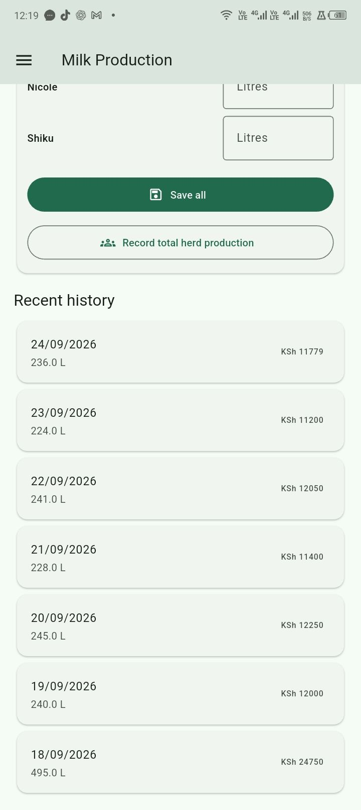
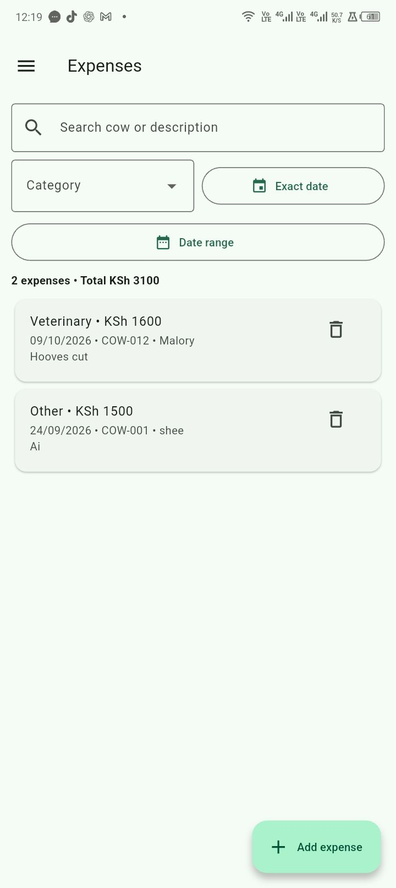
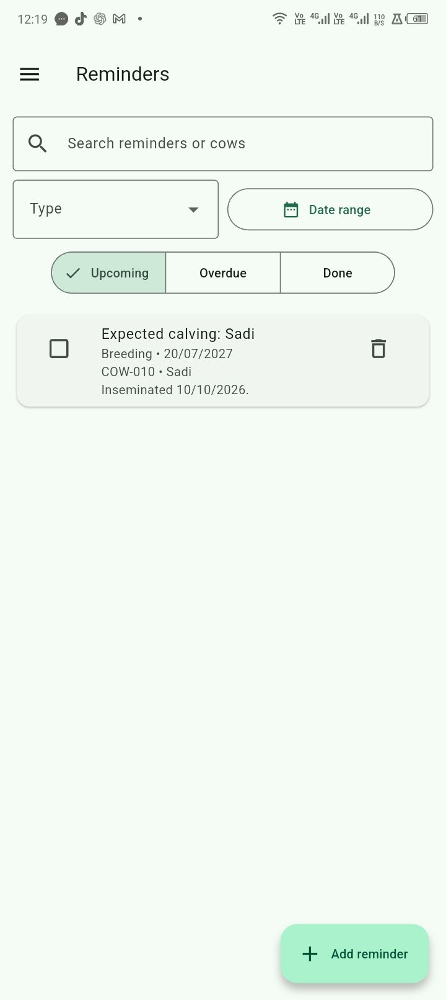
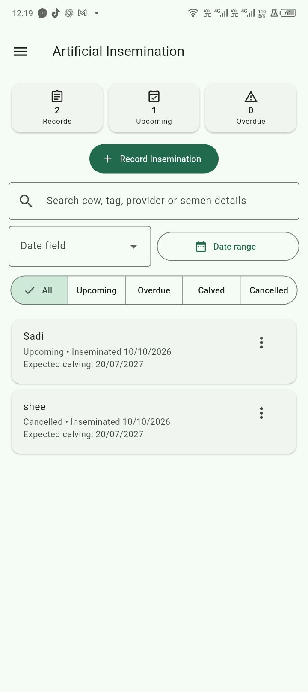
SYSTEM AREAS
Individual records for every cow, including health, breeding and production details.
Milk recorded by cow and by session, with the price saved alongside each record.
Monthly feed costs are recorded and charted, so I can see how feeding affects the bottom line.
Veterinary and other costs are logged by category, date and cow.
Milk income, expenses and estimated profit, for the whole farm and for each cow.
Month-on-month comparisons, expense breakdowns and top producers turn records into numbers I can act on.
Insemination records with expected calving dates and their status.
Upcoming, overdue and completed reminders so important dates do not slip.
Find any record quickly by cow, date or month.
TECHNOLOGY
WHAT I LEARNED
Taking My Farm Manager from an idea to a finished app taught me how to structure a Flutter application, design screens around real workflows, model farm data in Firestore and write the calculations behind totals, averages, profit and loss.
Using it on the farm myself taught me the most. Anything slow or unclear gets noticed straight away, which is why I now think about software from the point of view of the person who will actually use it.
WHAT’S NEXT
The app is complete and in use. The natural next steps are deeper reporting and smarter insights that turn farm data into clear recommendations.
That is also where my interest in machine learning and AI comes in: using the data a farm already collects to help it make better decisions.